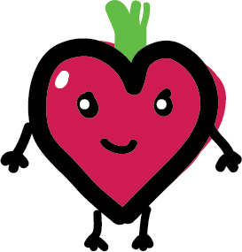

josei beat
josei beatOur history: Josei Beat is an idea that had been brewing in the minds of site admins Kusa and Coco ever since we discovered our love for josei manga and realized it did not have a strong, centralized English-speaking community of fans. Holberton School provided the incentive for Coco, who had no prior (significant) web development experience, to develop the site as part of their application process for Holberton's inaugural class in 2015. We can't wait to see where the site goes from here!
Our logo: Bito (Japanese pronunciation of 'beet') is an interpretation of a pun on Josei Beat's name, referencing the sweet root vegetable that sounds the same as "Beat" in English. You might see Bito hanging around a lot on the website, as it is our mascot!
Did you know? In Japanese, -bito is also used as a suffix meaning "person" in some pronunciations of the usual suffix -hito. So, you might see it in the words koi-bito (love+person, boyfriend or girlfriend), yama-bito (mountain+person, mountain people), or tabi-bito (journey+person, strangers or travelers), for example.
Site admins
Kusa (real name: Rona Chong): Normally, Kusa would be writing her own bio here, but right now she is busily typing away at her laptop to make her own personal website as part of the Holberton application challenge. ¯\_(ツ)_/¯ Kusa has a love for kaomoji and dwelling on abstract, overly cerebral ideas in the land of her own mind. She is prone to rumination. Her name comes from her fondness of kusamochi, mochi made from the yomogi (also known as mugwort) herb.
Coco (real name: Electra Chong): Cocoyam is a 21-year-old, nearing the iconic Taylor Swift age of 22, working in the IT world. In her free time, she enjoys learning languages, crocheting, and being an introvert (aka reading josei on the couch instead of venturing out on the weekends). Coco's ambitions include speaking Italian and Korean semi-fluently and crocheting an amigurumi doll. Her name was inspired by watching and being fascinating by a video of pounding cocoyam fufu, and taro, which is also called 'cocoyam' in some countries.
Staff authors
We can't wait to expand our team of staff writers!
If you have a love for josei and a flair for writing, and like the idea of being a central part of the Josei Beat staff team, consider sending us an application here.